Decision Process Flows
A Decision Process Flow determines how a record is processed at runtime. A Decision Process Flow consists of:
- a starting point and one or more end points separated by a series of linked decision processes and junctions.
- the order in which decision processes are executed at runtime.
- subordinate flows, which themselves contain decision processes, as part of the process.
The Decision Process Flow editor is used to define the Decision Process Flow that will process records at runtime.
The Decision Process Flow is made up of the following:
 Start Node - the point in the Decision Process Flow where processing starts. A Decision Process Flow must always have a start node.
Start Node - the point in the Decision Process Flow where processing starts. A Decision Process Flow must always have a start node.
Process Node - a point in the flow where a process is executed.
Junction Node - a point in the Decision Process Flow where pathways can be defined. When a record is processed through a junction that has had a segmentation device such as a class set, boolean expression, matrix or segmentation tree applied to it, the junction is used to direct the record to the next relevant decision process depending on which pathway is triggered.
 End Node - the point in the Decision Process Flow where processing ends. A Decision Process Flow must have one or more end nodes.
End Node - the point in the Decision Process Flow where processing ends. A Decision Process Flow must have one or more end nodes.
The Palette contains a list of system resources that are available for use when the Decision Process Flow editor is active. The user can drag and drop resources from the Palette window into the Main editor.
| The content of the Palette is directly related to the access rights of the user, including their licence, and installed plugins, such as the ACE plugins. |
The Decision Process Flow Palette comprises of the Palette and Resources.
Palette
The palette contains the components that can be used to build the Decision Process Flow. The palette when activated by the Decision Process Flow editor is itself made up of:
Flow Builder - four different nodes that together enable the user to build a flow.
Processes - process types that can be assigned to Process nodes.
Segmentation - segmentation rules that can be applied to Junction nodes to form pathways in the flow.
Resources
The Resources window contains a list of resources that are available for use in the active editor. Only resources created by the user that are either allowed or published in the folder from which the Decision Process Flow has been opened, will be listed in the Resources window.
The Decision Process Flow editor is used to define the Decision Process Flow that will be executed at runtime.
A Decision Process Flow can be created from the Explorer window.
| You will only be able to add a component type that has been allowed for the selected folder. If it is not allowed it will not be listed and therefore cannot be created. |
To create a Decision Process Flow
- From the Explorer window right click at the required folder level and select Add component.
- Select Decision Process Flow.
- In the Create component dialog enter the name of the Decision Process Flow.
- Select the Open new components in component editor check box.
- Click on the OK button.
The Decision Process Flow editor will open allowing you to edit a Decision Process Flow.
The Decision Process Flow name will be listed in the Explorer window under the selected folder level. The component is identified by the icon.
If you do not wish the editor to open, keep the check box de-selected. From the Explorer window right click on the Decision Process Flow and select Open.
To define a Decision Process Flow
A process node is a point in the Decision Process Flow where processes are applied. It is these processes that are executed at runtime. Creating a Decision Process Flow involves adding processes to the Decision Process Flow, assigning appropriate components for the particular process from the Resources window and defining the mappings required to enable monitoring and runtime processing. It is the process node that represents the rules that are applied to a record at that particular stage of the processing.
To add a process to a Decision Process Flow
- With the Decision Process Flow editor open, left click on either the Start node or another Process node and click on the Add Process Node icon:
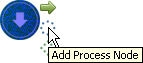
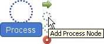
A Process will be added to the Decision Process Flow and automatically linked to the node from which you selected Add Process Node.From the Palette, within the Flow Builder, you can also drag and drop the Process onto the editor.
- Right click on the node and select Rename or double click on the name of the Process node and type a description for it.
- Press Enter on your keyboard.
The system will check to ensure that this name is unique in the Decision Process Flow and give the Process node the new name. - Repeat steps 1 to 2 as required to add the process nodes you require to the Decision Process Flow.
| The name of the node can also be changed from within the Properties window. |
You can now add a junction to a Decision Process Flow, add a component to a process in sketch mode or add a configured component to a process.
To add a component to a process node, the user will need to activate the Decision Process Flow editor. A component that has been assigned to a process indicates that a specific component will be executed at this point in the flow.
A placeholder of a particular type can be assigned to a process node if a specific component does not exist. This indicates that a specific process will be executed at this point in the flow once this process has been fully configured. |
The Decision Process Flow can be described as being in "sketch" mode if processes have had just placeholders assigned to them.
| For a Decision Process Flow to be successfully deployed all process nodes in the flow must have had fully configured processes added to them. |
To add a component to a process in sketch mode
- With the Decision Process Flow editor open, click on the Palette and expand Processes.
All the available process will be displayed. - Drag and drop the required component onto the process you require.
The system will change how the process is displayed, from a process that does not have a anything assigned
to a one that indicates that the process now has specific component assigned. - Repeat step 2 to add the components you require to the processes.
To add a component to a process node in paint mode, the user will need to activate the Decision Process Flow editor. The type of process that is added to a process node directly affects what rules and actions are applied to a record at runtime. The Decision Process Flow could be described as being in "paint" mode once all processes are fully configured.
| For a Decision Process Flow to be successfully deployed all process nodes in the flow must have had fully configured processes added to them. |
To add a component to a process
- With the Decision Process Flow editor open, click on the Resources window and all the components that are available will be listed.
- Expand the component type list to display all the available components for that type. For example:
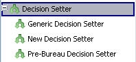
- Drag and drop the required component onto the process you require.
The system will change how the process is displayed, from a process that contains a placeholder.
to a one that indicates that the process is now configured, that it has a component attached.
- Repeat steps 2 to 3 to add the components you require to the processes.
| You will only be able to add a component type that has been allowed for the selected folder. If it is not allowed it will not be listed in the Resources window and therefore cannot be selected. |
Continue editing your Decision Process Flow as you require.
or
To add a previously configured component to a process node the user will need to activate the Decision Process Flow editor. The type of component that is added to a process node directly affects what rules and actions are applied to a record at runtime. The Decision Process Flow could be described as being in "paint" mode once all processes are fully configured.
| For a Decision Process Flow to be successfully deployed all process nodes in the flow must have had fully configured processes added to them. |
To add a configured component to a process
- With the Decision Process Flow editor open, click on the Resources window and all the components that are available will be listed.
- Expand the component type list to display all the available components for that type. For example:
- Drag and drop the required component onto the process you require.
The system will change how the process is displayed, from an empty process.
to a one that indicates that the process is now configured, that it has a component attached. - Repeat steps 2 to 3 to add configured components you require to the processes.
| You will only be able to add a component type that has been allowed for the selected folder. If it is not allowed it will not be listed in the Resources window and therefore cannot be selected. |
Continue editing your Decision Process Flow as you require.
Using a Junction node in a Decision Process Flow enables the user to state an alternate pathway through the flow for groups of records that satisfy certain criteria. The outcomes of these segmentation devices are then assigned to other process nodes within the Decision Process Flow in order that records that satisfy any of the criteria will go on to be processed by different processes.
To add a junction to a Decision Process Flow
- With the Decision Process Flow editor open, left click on either the Start node or another Process node and click on the Add Junction icon,
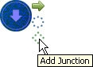
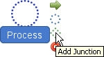
A junction will be added to the Decision Process Flow and automatically link to the node from which you selected Add Process Node.From the Palette, within the Flow Builder, you can also drag and drop the Junction onto the editor.
If you have added a Junction to the editor using the Palette, the junction will not be connected to any nodes. You will need to left click on the Junction node,
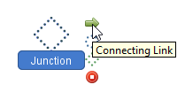
then click the Connecting Link arrow and drag the arrow to the Junction node to connect it. - Right click on the node and select Rename or double click on the name of the Junction node and type a description for it.
- Press Enter on your keyboard.
The system will check to ensure that this name is unique in the Decision Process Flow and give the Junction node the new name.
You can now add additional processes to the Decision Process Flow or assign a segmentation device to the Junction node.
Using a Junction node in a Decision Process Flow enables the user to state an alternate pathway through the flow for groups of records that satisfy certain criteria. The outcomes of these segmentation devices are then assigned to other process nodes within the Decision Process Flow in order that records that satisfy any of the criteria will go on to be processed by different processes.
Segmentation devices can be added from either the Palette, from within Segmentation or from the Resources window.
| Segmentation and processes listed in the Palette can only be used as place holders in your Decision Process Flow. When these are added to either Process nodes or Junction nodes, the nodes will be displayed in Sketch mode and contain no additional configuration. A Decision Process Flow that contains Processes or Junctions still in Sketch mode can not be deployed or tested. |
To add a segmentation device to a Junction node
- With the Decision Process Flow editor open and a Junction node added, from the Resources window drag and drop the segmentation device you require onto the Junction node.
|
Class Sets, Matrices and Index Tables that have been defined against Logical Data Models can only be used in scripting components. If any are used in a Decision Process Flow, an error message similar to the following will be displayed: |

The Junction node will be updated in the Decision Process Flow with a number of pathways to represent the outcomes formed by the assigned segmentation device. 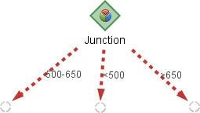
The labels assigned to each pathway will correspond directly to the names of the outcomes created by the class set intervals, the names of the matrix outcomes or they will be displayed as True or False if a boolean expression has been used. The names and number of pathways produced will depend on the segmentation device used.
- There are three ways to connect the pathways:
- From the Palette drag and drop a Process icon or another Junction icon onto the end point of a pathway.
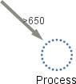
The system will change how the pathway is displayed to indicate that the pathway is configured. - Pick up the pathway with your mouse
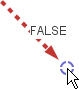
and drag and drop it onto a process.
- Right click on the pathway and from the context menu select either End Node, Junction or Process Node.
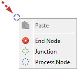
The system will change how the pathway is displayed to indicate that the pathway is configured.
- From the Palette drag and drop a Process icon or another Junction icon onto the end point of a pathway.
- Repeat step 2 until all pathways of the Junction have either a Process or a Junction attached.
|
To disconnect a pathway from a Junction, Process Node or End Node, right click on the pathway, and from the context menu select Unjoin. 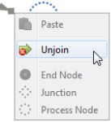 |
You can now add additional processes and junctions to the Decision Process Flow as required.
A process node is a point in the Decision Process Flow where processes are applied. It is these processes that are executed at runtime. Creating a Decision Process Flow involves adding processes to the Decision Process Flow, assigning appropriate components for the particular process from the Resources window and defining the mappings required to enable monitoring and runtime processing. It is the process node that represents the rules that are applied to a record at that particular stage of the processing.
| If you want to stamp out a results data model you need adequate permissions to allow you to edit the logical data source. |
To configure a process or junction node the user needs to define where the output from each process and/or junction will be mapped. The type of process or junction added affects the mappings required since at runtime each process will generate different values. When a process is added to a process node, or when a segmentation rule is added to a junction, the user needs to right click on the node and select Results Mapping. The Define Results Mapping dialog will open where the user can choose to
- map a results logical data model to a logical data source (Generic)
- individually map specific results characteristics to individual characteristics that are already defined in the logical data source (Custom)
| Irrespective of what method is chosen the system will not allow the user to map characteristics twice or select to map an individual characteristic that has already been mapped from within a model. |
The results logical data model for the specific process or junction is added to the logical data source as an embedded logical data model.
For more information see Generic Results Mapping, Custom Results Mapping and Mapped Characteristics
To define the mappings required for the process or junction
The following instructions are for defining the mappings for a process; the same instructions should be used to define the mappings for a junction
- With the Decision Process Flow editor open and a process added, select the process that has been added to the process node, then right click and select Results Mapping.
The process or junction node does not have to be full configured, you can map a sketched process or junction as long as the place holder has been defined. The system will display the Define Results Mapping dialog.
All the component trees (Decision Setter Tree, Derived Data Script Tree, Index Table Tree, Scorecard Tree, Treatment Tree and Value Setter Tree) and the Decision Setter process and the Scorecard process, will display more than one results logical data model in the Results Mapping panel.
See Mappings Required for more information on the contents of these logical data models. - With the button visible, in the Results Mapping panel, select the results Logical Data Model and the Logical Data Source where you wish the Logical Data Model to be added.
- Click on the Map button.
The results Logical Data Model will be listed below the Logical Data Source you have selected and prefixed with the name of the process node.
The characteristics contained in the results Logical Data Model will be listed in the Mapped Characteristics table. - Rename the results logical data source.
Only one results logical data model type can be mapped for each process; once one has been selected you will not be able to map another results logical data model unless the one that is currently mapped has been unmapped. For any component tree (which includes a Decision Setter Tree, Derived Data Script Tree, Index Table Tree, Scorecard Tree, Treatment Tree or Value Setter Tree), at least one additional results logical data model can be mapped if required.
You can map models from each category, e.g. Tree mappings, Test Group Set mappings and process mappings, but you can only map 1 model from each category. For example, in a process that has multiple levels of models, that is Minimum, Typical and Full then only 1 can be selected. - Repeat steps 2 to 4 to add the Component Tree Results Logical Data Model and complete the mappings.
- Optionally, if test group results are required, repeat steps 2 to 4 to add the Test Group Set Results Logical Data Model to the Logical Data Source.
| Once the results Logical Data Model has been mapped the results Logical Data Model can be renamed. |
The results mappings for the process object will now be defined to enable runtime processing.
There is the option to capture transaction data for nodes within the Decision Process Flow prior to deployment, enabling the management of data from decision service to analytical consumption. Data Capture can be turned on for the whole flow using the 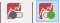
In order for data capture to work however, not only does data capture need to be turned on in the studio environment for each individual process node in the Decision Process Flow, but data capture also needs to be set up in the runtime environment. The Decision Agent needs to be configured so that it knows where to write the transaction data and how to recognise the transaction segment etc.
In order to move this transaction data into the DA the batch process called Decision Store Extraction should be used. Further information about configuring these Batch Process Flows can be found in the Batch Process Flow overview topic.
|
Do not switch on data capture unless you plan to fully configure both the studio and the runtime environments. Switching on data capture without configuring the Decision Agent will decrease its performance as it will try to carry out the extra work without knowing where to output the transaction data or how to recognise the transaction segment that will be passed from the Host System. |
To switch data capture on for the whole Decision Process Flow
- With the Decision Process Flow editor open for the relevant Decision Process Flow, from the toolbar select the Flow Capture icon and toggle the icon on
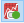
All the processes/junction nodes that are able to capture data will now change and an additional icon will be displayed to indicate that data capture has been switched on for the whole flow. - To switch data capture off for the whole Decision Process Flow, toggle the icon off
To switch data capture on for individual process and junction nodes
- With the Decision Process Flow editor open for the relevant Decision Process Flow, right click on the process/junction node where you wish data capture to be switched on and select Process Data Capture.
The process/junction node will change and an additional icon will be displayed to indicate that data capture has been switched on. - Ensure that all the process/junction nodes that you would like to capture data have had this option switched on.
|
Only junction nodes that have a test group set or segmentation tree assigned to them can have data capture switched on. |
|
Only process nodes that have had a process assigned to them can have data capture switched on. |
The Decision Process Flow will need to be re-deployed.
The Copy functionality enables individual nodes or groups of nodes to be copied from a Decision Process Flow and pasted:
- within the same Decision Process Flow
- within another Decision Process Flow within the same folder
| Individual nodes or groups of nodes cannot be copied from a Decision Process Flow in one solution into a Decision Process Flow in another solution. |
Copy can be accessed from any process node in the Decision Process Flow once it is highlighted.
To copy a node
- With the Decision Process Flow editor open, right click on the node that you wish to copy and select Copy.
- Right click anywhere in the editor and select Paste.
A copy of the node will be pasted into the editor.
Use the Connecting Link arrow to connect the node as required.
To copy a node and paste it onto a junction pathway
- With the Decision Process Flow editor open, right click on the node that you wish to copy and select Copy.
- Right click on the pathway and select Paste.
A copy of the node will be pasted onto the pathway.
To copy more than one node
- With the Decision Process Flow editor open, using your cursor, highlight the nodes that you wish to copy and select Copy.
- Right click and select Paste as you require.
A copy of the nodes will be pasted into the editor.
Use the Connecting Link arrow to connect the nodes as required.
To copy and paste into another Decision Process Flow
- With the Decision Process Flow editor open, using your cursor, highlight the node or nodes that you wish to copy and select Copy.
- Within the Explorer window, right click on the name of Decision Process Flow where you wish to paste the copy and select Open.
The Decision Process Flow editor will open for this flow. - In the Decision Process Flow definition area, right click and select Paste at the point where you want the node to be pasted.
A copy of the node or nodes will be pasted into the editor.
Use the Connecting Link arrow to connect the node or nodes as required.
Process nodes and Junction nodes can be renamed.
To rename a node
- With the Decision Process Flow editor open.
- Right click on the node and select Rename or double click on the name of the Process node and type a new description for it.
- Press Enter on your keyboard.
The system will check to ensure that this name is unique in the Decision Process Flow.
| Should you wish the text to go across multiple lines, use Shift + Enter on your keyboard. A new line will be created. |
The process node or junction node will be assigned the new name.
A process node or a junction node can be deleted from a Decision Process Flow.
To delete a node
- With the Decision Process Flow editor open, right click on a node and select Delete or select a number of nodes using your cursor, right click and select Delete.
A Confirmation dialog will be displayed. - Click on the Yes button.
The process node or junction node will be removed from the flow.
The placeholder or component that was attached to the process or junction will also be removed from the Decision Process Flow.
An end node is the point in the Decision Process Flow where processing ends. A process flow must have one or more end nodes.
To add an end node
- With the Decision Process Flow editor open, left click on the Process node or Junction and click on the Add End node icon.
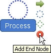
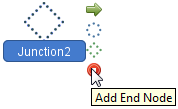
The End node icon will be added to the Decision Process Flow and will be automatically linked to the process or junction.From the Palette, within the Flow Builder, you can also drag and drop the End node onto the editor.
If you have added the End node icon to the flow using the Palette, the End node icon will not be connected to the process.
You will need to left click on the Process,
then click the Connecting Link arrow and drag the arrow to the End node icon to connect it
On the pathway of a Junction, right click and select End Node
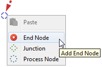
The End Node icon will be assigned to the end of the pathway.
You can now continue defining the Decision Process Flow.
The alias is a 32 characters name for the Decision Process Flow, and is used by the calling application to tell the run time engine which Decision Process Flow to execute. The alias is assigned to an edition file during the creation of the deployment.
To set the alias for a Decision Process Flow
- With the Decision Process Flow editor open, and the Properties Window open, select the Start node of the Decision Process Flow that you wish to deploy.
- Click in the field next to Short Alias and click on the
 button.
button.
The system will open the Node - Short Alias dialog. - Type a unique identifier of 32 characters or less for the Decision Process Flow and click on the OK button.

The alias will now be assigned to the Decision Process Flow.
For Decision Process Flows that are part of Collections or Originations solutions, the solution designer must set the appropriate value for the Originations Mode property to ensure correct runtime execution. This can be done by using the check box, accessed by clicking on the Start node in the Decision Process Flow and accessing the Properties window.
|
The default property setting for new and existing Decision Process Flows is for the Originations Mode to be not selected. In the case of Collections solutions invoking a Decision Agent Strategy, the Decision Process Flows must be deployed with the Originations Mode selected. In the case of Originations solutions invoking a Decision Agent Strategy, the Decision Process Flows must follow the data structure of the Originations solution. If the Originations Business Process Composition component's HDM Mode property is not selected, the Decision Process Flows must be deployed with the Originations Mode selected. If the Originations Business Process Composition component's HDM Mode property is selected, the Decision Process Flows must be deployed with the Originations Mode not selected. |
To set the Originations Mode of a Decision Process Flow deployment
- With the Decision Process Flow editor open, and the Properties Window open, select the Start node of the Decision Process Flow that you wish to deploy.
- Click in the check box, in the field next to Originations Mode.
The Decision Process Flow will now be deployed in a mode that is compliant with the requirements of the Collections and Originations data structure.
Once your Decision Process Flow is complete you can test it or deploy it as required.
A Decision Process Flow can be created as part of another Decision Process Flow that will be processed as part of the execution. To these sub-flows or subordinate flows, settings can be defined that will enable the flow to be processed a number of times or "looped" before the next process in the flow is executed.
A Decision Process Flow that has had looping activated can have the following defined:
- Terminating condition - an exit criteria set by a Boolean Expression that is evaluated after each completed execution of the performed flow. If the condition is true, execution will stop and no further executions of the process flow will be performed (optional).
- Loop Limit - maximum number of times the Decision Process Flow will be processed (mandatory).
-
Loop Index – a user-defined characteristic that will be set automatically by the system to the current iteration count at the start of each execution of the performed Decision Process Flow. This characteristic can then be referenced within the performed flow as an index to any loop-dependant processing. When the loop is terminated after executing the performed flow (either by reaching the defined Loop Limit, or when the Terminating Condition is true) the specified characteristic will indicate the number of times the Decision Process Flow was executed (optional).
To configure a flow to loop
- With the Decision Process Flow editor open and a Decision Process Flow process assigned to a process node, right click and select Add Loop.
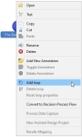
A sub flow that has had looping activated will display the following: - With the process node highlighted and looping activated, within the Properties window, click on the to define the Terminating condition.
- From the drop down box select the Boolean Expression that is required.
- Next to Loop Limit, type a value between 1 and 9999. This will be the number of times the sub flow will be executed. The default value is 1.
- Next to Loop Index, click on the to access the Select Characteristic dialog.
- In the Search field
 type the word or part of a word that makes up the name of the characteristic.
type the word or part of a word that makes up the name of the characteristic.
The Select Characteristic dialog will focus in on a particular characteristic or set of characteristics that match this word. - Select the characteristic you require.
- Click on the OK button.
- The Select Characteristic dialog closes and the characteristics you have selected will be added to the field.
| The Terminating condition is an optional field. If a Boolean Expression has been defined it will be executed after each completed execution of the sub-flow. If, the record satisfies the criteria held in the Boolean Expression, then execution of the sub flow will stop. |
| The Loop Limit field is the only field that is mandatory. |

{kind=link}
{kind=link}
{kind=link}
{kind=link}
{kind=link}
{kind=link}
{kind=link}
{kind=link}
{kind=link}
{kind=link}
{kind=link}
{kind=link}
{kind=link}
{kind=link}
{kind=link}
{kind=link}
{kind=link}
{kind=link}
{kind=link}
{kind=link}
{kind=link}
{kind=link}
{kind=link}
{kind=link}
{kind=link}
{kind=link}
{kind=link}
{kind=link}
{kind=link}
| If the Select Characteristic dialog is displaying the characteristics in a tree view, the logical data source will need to be fully expanded to see all the characteristics that match the word(s). |
| The system counts the number of times the Decision Process Flow has been performed, and automatically sets the value of the defined Loop Index characteristic with the current iteration count at the start of each execution of the performed Decision Process Flow. Do not change the value of the Loop Index characteristic within the performed flow as this will affect the results. |
The Decision Process Flow has now been successfully configured to loop.
A Decision Process Flow can be created as part of another Decision Process Flow that will be processed as part of the execution. To these sub-flows or subordinate flows, settings can be defined that will enable the flow to be processed a number of times or "looped" before the next process in the flow is executed. The delete loop option enables a sub flow that has had looping activated, to have it deactivated.
| The delete a loop option will only become available if a loop has been configured for a flow. |
To delete a loop
- With the Decision Process Flow editor open, right click on a Decision Process Flow process to which looping has been defined and select Delete Loop.
The Decision Process Flow process will be reverted to a Decision Process Flow that does not have looping activated. The Properties window will no longer contain the Loop Category that needs to be configured.
A Decision Process Flow can be created as part of another Decision Process Flow that will be processed as part of the execution. To these sub-flows or subordinate flows, settings can be defined that will enable the flow to be processed a number of times or "looped" before the next process in the flow is executed. The Reset Loop Properties option enables users to reset the properties to the original values - the default values.
| The Reset loop properties option will only become available if a loop has been configured for a flow. |
To reset loop properties
- With the Decision Process Flow editor open, right click on a Decision Process Flow process to which looping has been defined and select Reset loop properties.
The Decision Process Flow process will have all the properties that were defined in the Loop Category reset back to their default values.
A subordinate flow is any Decision Process Flow that is invoked from one or more Decision Process Flows. A subordinate flow consists of:
- a starting point and one or more end points separated by a series of linked decision processes and junctions
- the order in which decision processes are executed at runtime
- subordinate flows, which themselves contain decision processes, as part of the process
Once defined, the subordinate flow can be opened directly by double clicking on the Decision Process Flow icon from within the flow it is being used or by right clicking on the Decision Process Flow name in the Explorer window and selecting Open.
To create a flow from an existing flow
- With the Decision Process Flow editor open, select the process or collection of processes and junction nodes that you wish to create into a subordinate flow, right click and select Convert to Decision Process Flow.
The Create component dialog will be displayed. - In the Create component dialog enter the name of the subordinate flow.
- Click on the OK button.
The subordinate flow name will be listed in the Explorer window under the selected folder level. The process or collection of processes will be converted in to a process node within the Decision Process Flow. - Right click on the node and select Rename or double click on the name of the Process node and type a new description for it.
- Press Enter on your keyboard.
The system will check to ensure that this name is unique in the Decision Process Flow.
{kind=link}
The Decision Process Flow will be updated. The new subordinate flow will be available for use in other Decision Process Flows as required.